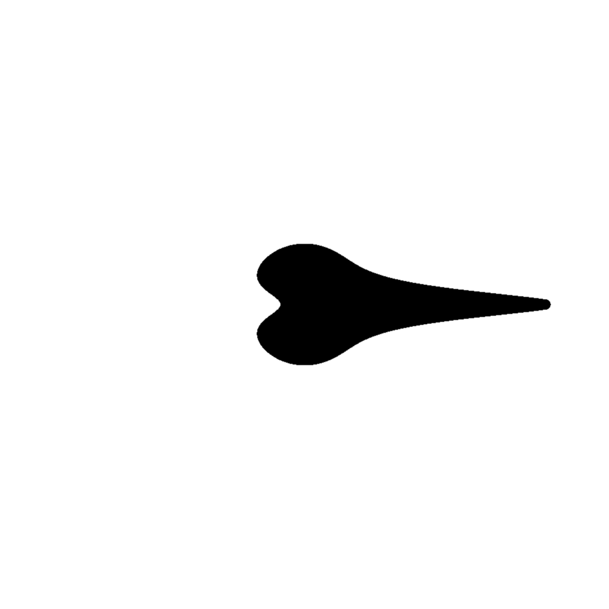

Run of com.github.skac112.klee.painters.Painter2 painter
Time: 22-12-02_10:42:24Git hash: 9c70244
Painter parameters
- frontDecayType: Symbol(DECAY_LIN_SAT)
- frontDecay: 0.571212026302573
- to: Point(0.4,0.0)
- sideDecay: 10.816909335022105
- backDecayType: Symbol(DECAY_LIN_SAT)
- backDecay: 1.695011450200926
- sideDecayType: Symbol(DECAY_GAUSS)
- from: Point(0.08849448088589199,0.0)
Render parameters
- X range: <-0.5; 0.5>
- Y range: <-0.5; 0.5>
- nx: 1000, ny: 1000
